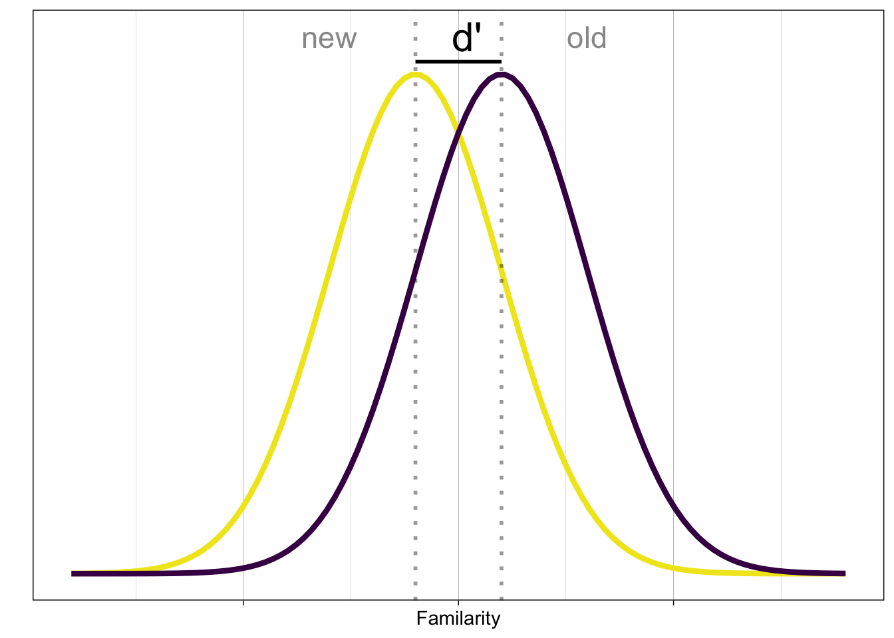
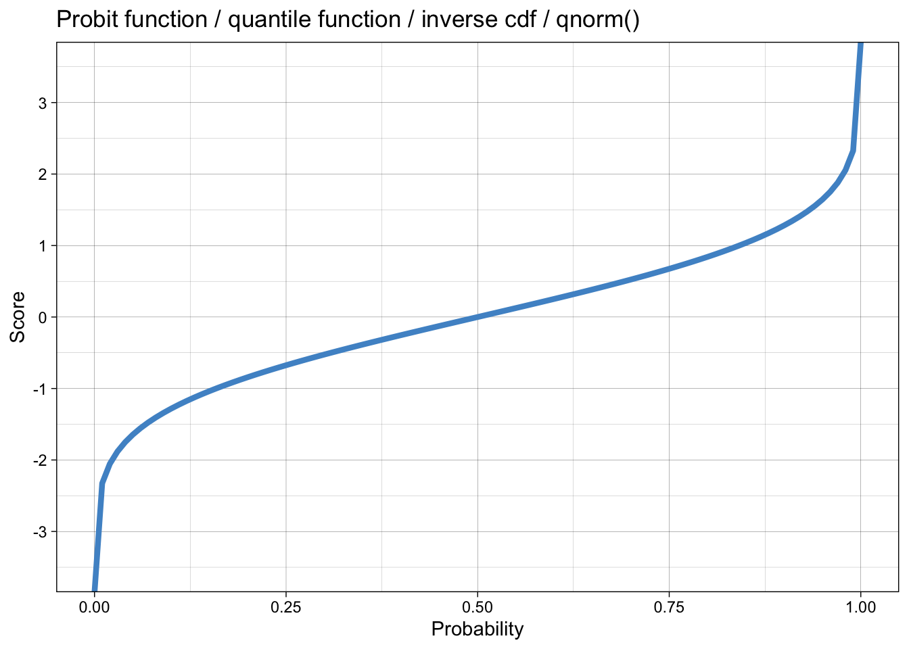
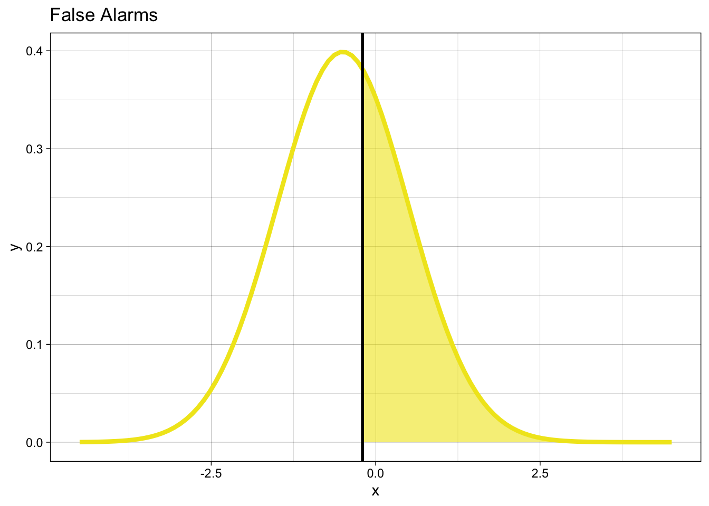
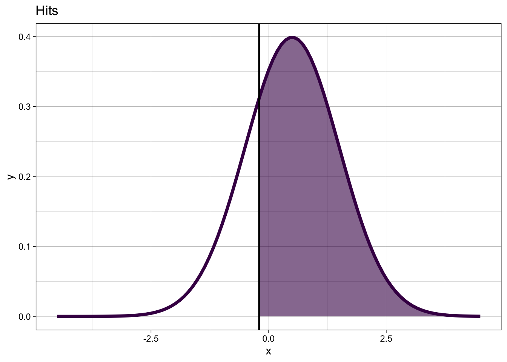
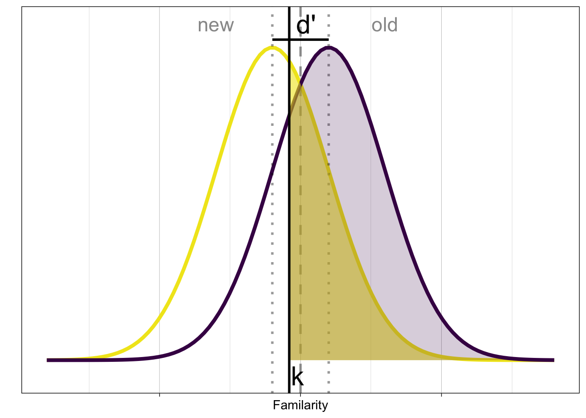

Signal Detection Theory: I
Theory and applications.
Andrew Ellis ![]()
Signal detection theory
We consider an experiment in which a person has to classify a stimulus into one of two possible categories:
- new / old
- left / right
- yes / no
We can neglect the underlying task, as the math is the same. In the general case, say we present two stimulus categories A and B, that vary along some dimension. The task of the subject in our experiment is to perform a binary classification with the response options A and B. The subject’s performance can be summarized in a classification table, with four possible outcomes:
| Signal | ||
|---|---|---|
| Response | A (yes) | B (no) |
| A (yes) | Hit | False alarm (FA) |
| B (no) | Miss | Correct rejection (CR) |
-
Hit: Stimulus is
A, subject respondsA - Miss: Stimulus is
A, subject respondsB -
False alarm: Stimulus is
B, subject respondsA - Correct rejection: Stimulus is
B, subject respondsB
Given the stimulus, the subject has two response options. Therefore, we consider only the
Aresponses when the stimulus isA(hits) orB(false alarms).
The SDT model assumes that on each trial \(i\), a person’s information about a stimulus can be modeled as a random variable \(X_i\).
This is drawn from one of two possible distributions, which (in equal variance SDT) differ only in their location, but not their scale ( we assume that \(\sigma = 1\)).
Example: familiarity. When the subject is shown an image, this evokes a feeling of ’familiarity`. This is a latent strength variable.
Thought experiment: you are a subject in a memory experiment. You were previously shown a number of images, and now you are presented with a mixture of old and new items, and have to say whether you have previously seen the test image.
This can be formulated as the following statistical problem:
You are given a random variable \(X\), i.e. a draw from a normal distribution with a known standard deviation. You also know that distribution can have either of two known means, you just don’t know which one. The two distributions differ only in their mean, and the difference in means is called
d'.You are asked to say which distribution that \(X\) is most likely to have come from. This is a decision, so you need some sort of decision rule. In this case you can choose a criterion, and compare \(X\) to this.
You will produce four types of responses: you will either correctly classifiy the presented stimulus, or its internal representation \(X\), as either
oldornew. You will do this correctly (hits/correct rejections), or you will produce a missclassification (false alarms/misses).From your behavioural data, the number of
hitsandfalse alarms, we want to estimate your hit rate and false alarm rate, and then compute your internal (latent) quantities that guided your behaviour.
The internal signal evoked by old and new items is often shown like this:
New items produce less familiarity than old items, but the internal representation is noisy.
In order to classify the presented stimulus, based on the evoked familiarity (decision variable), we need a decision rule:

A simple rule is to compare the signal with a criterion \(k\). If the signal \(X > k\), then respond old (“Yes, I have previously seen it”), otherwise respond new (“No, I haven’t seen it before”).
Signal detection parameters
The commonly known SDT parameters are \(d'\) and and \(c\).
- d’: distance between distributions
\[ d' = c - \phi^{-1}(1-p_{H}) = \phi^{-1}(p_{H}) - \phi^{-1}(p_{FA}) \] which can also be written as: \[ d' = \phi^{-1}(P(y = 1 | old)) - \phi^{-1}(P(y = 1 | new)) \]
The expression for \(d'\)
- requires estimating probabilities conditional on the identity of a signal
- requires taking the difference on a transformed (probit) scale
- this is equivalent to a contrast between levels of a factor with two levels as the linear predictor for a response in a GLM

- k: decision criterion \[ k = \phi^{-1}(1-p_{FA}) = -\phi^{-1}(p_{FA}) \]
Better: distance to optimal decision boundary (c, or bias) \[ c = -\frac{1}{2} \left[\phi^{-1}(p_{H}) + \phi^{-1}(p_{FA})\right] \]
What we are doing here is estimating the hit rate and false alarm rate from observed hits and false alarms, and then computing d’ and c from these estimated probabilities.
We can also write this the other way round:
When the stimulus is new, we will produce false alarms with probability:
\[ p_{FA} = P(y = 1 | X = 0) = 1 - \Phi(k) \]

When the stimulus is old, we will produce hits with probability: \[ p_{H} = P(y = 1 | X=1) = 1 - \Phi(k-d') \]

- We can write this in one equation:
\[ P(y = 1 | X = x) = 1 - \Phi(k-d'X) = \Phi(-k + d'X) \] where \(X\) is an indicator variable, i.e. takes the value 1 for old and 0 for new.
This produces the probability of giving an old response, given the stimulus. If the stimulus is old, this is the probability of a hit, if the stimulus is new, this is the probability of a false alarm.

Compare the signal detection model
\[ P(y = 1 | X) = \Phi(-k + d'X) \]
to a Generalized Linear Model (GLM): \[ P(y = 1 | X) = \Phi(\alpha + \beta \cdot X) \]
We can estimate SDT parameters
kandd'using a probit GLM, if we use dummy coding (or effect coding) for a two-level stimulus factor.The intercept provides an estimate of the normal quantile of the false alarm rate.
The stimulus parameter (\(\beta\) or \(d'\)) provides an estimate of the difference between hit and false alarm rates on the probit scale.
Parameter recovery
To get a feel for how the parameters c and d' relate to observed hit and false alarm rates, we will do the following: we first simulate an observer performing a classification experiment with known parameters, i.e. c and d' are known to us and used to generate the data. We then attempt to recover c and d' from the observed hit and false alarm rates.
To do this, we can define a function that takes c and d' as input, and then simulates \(N\) signal and \(N\) noise trials, giving a total of \(2\cdot N\) trials.
We first calculate the probability of a hit, pH, and a false alarm, pFA, as they correspond to the area under the curve to the right of the criterion, under both signal and noise distributions, respectively.
We are using the bias
cto parameterize the distributions here. Alternatively, we could also use the criterionk, which would result in
This has the more intuitive interpretation that pFA is simply the area under the noise distribution that lies to the right of the criterion k, or: “given that my criterion is \(k\), what is the probability that my response was a false alarm?”. However, c is a more interesting quantity for us, because it quantifies the devation from an ideal observer.
We then generate false alarms and hits as binomially distributed random variables, i.e. number of yes responses in N trials, given the hit and false alarm rates, respectively.
Once we have the number of hits and false alarms, we can compute the number of misses and correct rejections, given that we know how many trials were performed in each condition.
CR <- nN-FA
Miss <- nS-HitNow, we can simulate the behaviour of an observer. An ideal observer would be unbiased, i.e. use a value of \(c=0\):
set.seed(89)
ideal_observer <- sim_sdt(d = 1, c = 0)
ideal_observer# A tibble: 1 × 4
Hit Miss FA CR
<int> <dbl> <int> <dbl>
1 61 39 26 74One thing to note is that, even an unbiased, ideal observer cannot achieve perfect performance given that \(d=1\).
We can compute the observer’s accuracy as:
ideal_observer |>
summarise(accuracy = (Hit + CR)/(Hit + CR + Miss + FA))# A tibble: 1 × 1
accuracy
<dbl>
1 0.675
Note
How can you make the ideal observer achieve an (almost) perfect performance?
We can also simulate the behaviour of an observer that is biased to toward giving yes responses, i.e. an observer with a value of \(c<0\):
set.seed(89)
yes_observer <- sim_sdt(d = 1, c = -1)
yes_observer# A tibble: 1 × 4
Hit Miss FA CR
<int> <dbl> <int> <dbl>
1 92 8 74 26yes_observer |>
summarise(accuracy = (Hit + CR)/(Hit + CR + Miss + FA))# A tibble: 1 × 1
accuracy
<dbl>
1 0.59
Tip
Here, it should become clear why accuracy by itself is not that informative. The observer that is biased toward saying yes will achieve a very high hit rate, but has to trade this off against a very high false alarm rate. If we just look at accuracy, we might think that the biased observer isn’t good at the task, but using SDT we may discover that it is the choice of criterion that is to blame, not the observer’s ability!
Parameter recovery
We can now attempt to recover the known parameters c and d' from the observed hit and false alarm rates.
yes_observer <- yes_observer |>
mutate(hit_rate = Hit/(Hit + Miss),
fa_rate = FA/(FA + CR))
yes_observer <- yes_observer |>
mutate(zhr = qnorm(hit_rate),
zfa = qnorm(fa_rate))
yes_observer <- yes_observer |>
mutate(dprime = zhr - zfa,
k = - zfa,
c = -0.5 * (zhr + zfa)) |>
mutate(across(c(dprime, c), round, 2))yes_observer # A tibble: 1 × 11
Hit Miss FA CR hit_rate fa_rate zhr zfa dprime k c
<int> <dbl> <int> <dbl> <dbl> <dbl> <dbl> <dbl> <dbl> <dbl> <dbl>
1 92 8 74 26 0.92 0.74 1.41 0.643 0.76 -0.643 -1.02For the biased observer, the valuues we used were \(d' = 1\) and \(c = -1\). Are we able to recover these?
yes_observer |> pull(c, dprime) 0.76
-1.02
Note
Why is it seemingly difficult to recover theses parameters?
Memory experiment
Let’s look at an example (borrowing heavily from this blog post).
The data are from a recognition memory experiment:
confcontr# A tibble: 3,100 × 4
subno sayold isold item
<fct> <dbl> <dbl> <dbl>
1 53 1 0 -0.5
2 53 1 1 0.5
3 53 1 1 0.5
4 53 1 1 0.5
5 53 1 0 -0.5
6 53 1 1 0.5
7 53 1 0 -0.5
8 53 0 0 -0.5
9 53 0 1 0.5
10 53 0 1 0.5
# … with 3,090 more rowsFirst we classify each response as hit, miss, correct rejection (cr) or false alarm (fa):
And then count the number of hits, etc.
sdt_summary <- sdt |>
group_by(subno) |>
count(type) |>
pivot_wider(names_from = type, values_from = n) We will need the following two functions later on. The first replaces all instances of NA with 0; i.e. if there is a count of zero, then we have the value NA in the data.
The second function provides a minor correction in case we have hit or false alarm rates of either 0 or 1. Since a rate \(r\) is a relative frequency, which we interpret as a probability, it must lie within the range 0:1: \(0 < r < 1\). The function adds or subtracts a small number, depending on whether the rate is \(0\) or \(1\). In this case, neither function is necessary; we apply them anyway, for demonstration.
sdt_summary# A tibble: 31 × 5
# Groups: subno [31]
subno CR FA Hit Miss
<fct> <int> <int> <int> <int>
1 53 33 20 25 22
2 54 39 14 28 19
3 55 36 17 31 16
4 56 43 10 38 9
5 57 35 18 29 18
6 58 41 12 30 17
7 59 46 7 21 26
8 60 38 15 33 14
9 61 42 11 25 22
10 62 45 8 22 25
# … with 21 more rows# A tibble: 31 × 5
# Groups: subno [31]
subno CR FA Hit Miss
<fct> <int> <int> <int> <int>
1 53 33 20 25 22
2 54 39 14 28 19
3 55 36 17 31 16
4 56 43 10 38 9
5 57 35 18 29 18
6 58 41 12 30 17
7 59 46 7 21 26
8 60 38 15 33 14
9 61 42 11 25 22
10 62 45 8 22 25
# … with 21 more rowsNext, we estimate the hit and false alarm rates, based on the observed number of hits and false alarms.
sdt_summary <- sdt_summary |>
mutate(hit_rate = Hit/(Hit + Miss),
fa_rate = FA/(FA + CR))
sdt_summary# A tibble: 31 × 7
# Groups: subno [31]
subno CR FA Hit Miss hit_rate fa_rate
<fct> <int> <int> <int> <int> <dbl> <dbl>
1 53 33 20 25 22 0.532 0.377
2 54 39 14 28 19 0.596 0.264
3 55 36 17 31 16 0.660 0.321
4 56 43 10 38 9 0.809 0.189
5 57 35 18 29 18 0.617 0.340
6 58 41 12 30 17 0.638 0.226
7 59 46 7 21 26 0.447 0.132
8 60 38 15 33 14 0.702 0.283
9 61 42 11 25 22 0.532 0.208
10 62 45 8 22 25 0.468 0.151
# … with 21 more rows# A tibble: 31 × 7
# Groups: subno [31]
subno CR FA Hit Miss hit_rate fa_rate
<fct> <int> <int> <int> <int> <dbl> <dbl>
1 53 33 20 25 22 0.532 0.377
2 54 39 14 28 19 0.596 0.264
3 55 36 17 31 16 0.660 0.321
4 56 43 10 38 9 0.809 0.189
5 57 35 18 29 18 0.617 0.340
6 58 41 12 30 17 0.638 0.226
7 59 46 7 21 26 0.447 0.132
8 60 38 15 33 14 0.702 0.283
9 61 42 11 25 22 0.532 0.208
10 62 45 8 22 25 0.468 0.151
# … with 21 more rowsGiven the hit and false alarm rates, we can calculate the value on the latent strength variable that must result in the hit and false alarm rate.
# A tibble: 31 × 9
# Groups: subno [31]
subno CR FA Hit Miss hit_rate fa_rate zhr zfa
<fct> <int> <int> <int> <int> <dbl> <dbl> <dbl> <dbl>
1 53 33 20 25 22 0.532 0.377 0.0801 -0.312
2 54 39 14 28 19 0.596 0.264 0.242 -0.631
3 55 36 17 31 16 0.660 0.321 0.411 -0.466
4 56 43 10 38 9 0.809 0.189 0.872 -0.883
5 57 35 18 29 18 0.617 0.340 0.298 -0.413
6 58 41 12 30 17 0.638 0.226 0.354 -0.751
7 59 46 7 21 26 0.447 0.132 -0.134 -1.12
8 60 38 15 33 14 0.702 0.283 0.531 -0.574
9 61 42 11 25 22 0.532 0.208 0.0801 -0.815
10 62 45 8 22 25 0.468 0.151 -0.0801 -1.03
# … with 21 more rowsFinally, we compute \(d'\), \(k\) and \(c\) using the formulae given above.
sdt_summary <- sdt_summary |>
mutate(dprime = zhr - zfa,
k = -zfa,
c = -0.5 * (zhr + zfa)) |>
mutate(across(c(dprime, k, c), round, 2))
sdt_summary# A tibble: 31 × 12
# Groups: subno [31]
subno CR FA Hit Miss hit_rate fa_rate zhr zfa dprime k
<fct> <int> <int> <int> <int> <dbl> <dbl> <dbl> <dbl> <dbl> <dbl>
1 53 33 20 25 22 0.532 0.377 0.0801 -0.312 0.39 0.31
2 54 39 14 28 19 0.596 0.264 0.242 -0.631 0.87 0.63
3 55 36 17 31 16 0.660 0.321 0.411 -0.466 0.88 0.47
4 56 43 10 38 9 0.809 0.189 0.872 -0.883 1.76 0.88
5 57 35 18 29 18 0.617 0.340 0.298 -0.413 0.71 0.41
6 58 41 12 30 17 0.638 0.226 0.354 -0.751 1.1 0.75
7 59 46 7 21 26 0.447 0.132 -0.134 -1.12 0.98 1.12
8 60 38 15 33 14 0.702 0.283 0.531 -0.574 1.1 0.57
9 61 42 11 25 22 0.532 0.208 0.0801 -0.815 0.9 0.81
10 62 45 8 22 25 0.468 0.151 -0.0801 -1.03 0.95 1.03
# … with 21 more rows, and 1 more variable: c <dbl>Memory experiment: single subject
For simplicity, we first look at the data from subject 53 only:
Signal Detection as GLM
A (standard) GLM will give us
- an intercept: this corresponds to
-k - a parameter for the indicator
isold: this corresponds tod'
subno53 <- confcontr |>
filter(subno == 53)
fit_glm_53_k <- glm(sayold ~ isold,
family = binomial(link = "probit"),
data = subno53)
summary(fit_glm_53_k)
Call:
glm(formula = sayold ~ isold, family = binomial(link = "probit"),
data = subno53)
Deviance Residuals:
Min 1Q Median 3Q Max
-1.2322 -0.9734 -0.9734 1.1236 1.3961
Coefficients:
Estimate Std. Error z value Pr(>|z|)
(Intercept) -0.3124 0.1752 -1.783 0.0746 .
isold 0.3925 0.2534 1.549 0.1214
---
Signif. codes: 0 '***' 0.001 '**' 0.01 '*' 0.05 '.' 0.1 ' ' 1
(Dispersion parameter for binomial family taken to be 1)
Null deviance: 137.63 on 99 degrees of freedom
Residual deviance: 135.22 on 98 degrees of freedom
AIC: 139.22
Number of Fisher Scoring iterations: 4fit_glm_53_c <- glm(sayold ~ item,
family = binomial(link = "probit"),
data = subno53)
summary(fit_glm_53_c)
Call:
glm(formula = sayold ~ item, family = binomial(link = "probit"),
data = subno53)
Deviance Residuals:
Min 1Q Median 3Q Max
-1.2322 -0.9734 -0.9734 1.1236 1.3961
Coefficients:
Estimate Std. Error z value Pr(>|z|)
(Intercept) -0.1162 0.1267 -0.917 0.359
item 0.3925 0.2534 1.549 0.121
(Dispersion parameter for binomial family taken to be 1)
Null deviance: 137.63 on 99 degrees of freedom
Residual deviance: 135.22 on 98 degrees of freedom
AIC: 139.22
Number of Fisher Scoring iterations: 4Reuse
Citation
BibTeX citation:
@online{ellis2022,
author = {Andrew Ellis},
title = {Signal {Detection} {Theory:} {I}},
date = {2022-03-15},
url = {https://kogpsy.github.io/neuroscicomplabFS22//pages/chapters/05_signal_detection_i.html},
langid = {en}
}
For attribution, please cite this work as:
Andrew Ellis. 2022. “Signal Detection Theory: I.” March 15,
2022. https://kogpsy.github.io/neuroscicomplabFS22//pages/chapters/05_signal_detection_i.html.